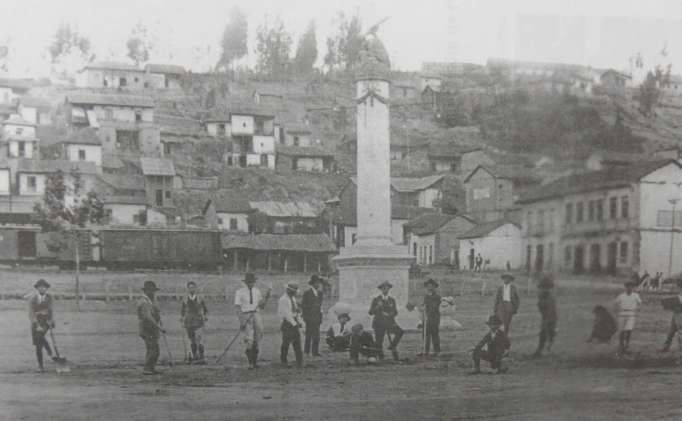
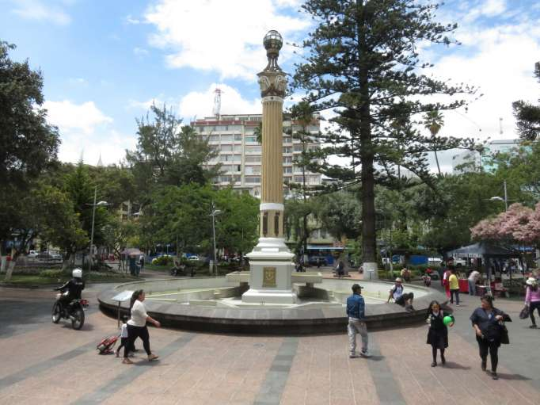

Monumento 12 de Noviembre
| Construcción | |
|---|---|
| Carlos Quinde, titular de la Dirección de Cultura, Turismo, Deportes y Recreación del Municipio, manifestó que el parque fue edificado con el propósito de simbolizar la gesta histórica de Ambato. En la mitad del parque se levanta una especie de columna greco-romana con estrías asentado sobre un espejo de agua que junto a otros pilones a sus costados, forman el "Faro de la libertad", indicó Quinde. A esto se suma las placas conmemorativas de los nombres de aquellas personalidades ambateñas y ecuatorianas que dieron su vida a favor de la libertad de la patria. |  |
| Actualidad | |
| El Municipio con el objetivo de rendir homenaje a los ciudadanos que lucharon por la independencia de Ambato, cada año conmemoran esta fecha cívica con un evento especial, en donde las instituciones públicas y privadas del cantón y provincia se hacen presentes con ofrendas florales. |  |